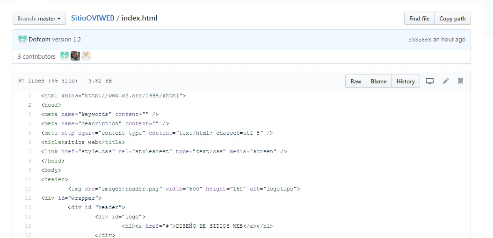

GITHUB
Es una platafarma para realizar el esquema de desarrollo de los repositorios y un trabajo para desarrollo y colaboracion con los pseronas que se encarguen de realizar un proyecto por lo tanto es un metodo facil para la recreacion y desarrollo de las distintas actividades de ejecucion.
Como ejemplo les presento el esquema de trabajo que se realizo para la construccion de este proyecto
En esta interfaz se realiza las distintas cargas de archivos para poder deralizar las modificaciones que se necesiten. Aparte de realiza la descarga final de los archivos que se necestien, la plataforma es de una gran ayuda para los trabajos en colaboracion.
